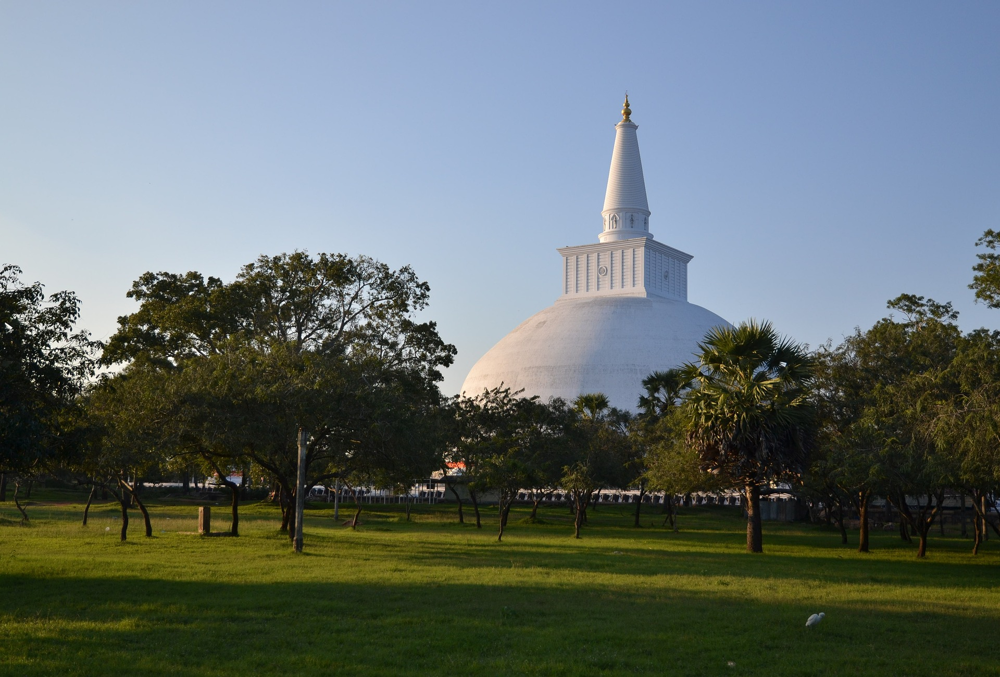

.jpeg)
Located in the heart of Sri Lanka, Kandy is a very beautiful and culturally important city.
There
is a
UNESCO site, the sacred Tooth Relic Temple with the revered relic of Lord Buddha.
Surrounded
by
misty
hills, the city boasts Kandy Lake, peaceful gardens and vibrant markets. Its fascinating
cultural
exhibitions and historical attractions are a must-visit, offering a glimpse into the heart
of
Sri
Lanka’s rich heritage and natural splendor.
Sigiriya Rock
.jpeg)
The Sigiriya Rock is, an ancient fortress in Sri Lanka, is a UNESCO World Heritage Site and
an
engineering and artistic masterpiece. Rising majestically from the surrounding forest,
Sigiriya
forms an impressive sculpture, a gigantic lion’s foot gate and a breathtaking view of the
mountain, often referred to as “the eighth wonder of the world”. A testament to the wisdom
and
culture of ancient Sri Lanka, attracting visitors from all walks of life across the globe.
nuwara eliya
Nuwara Eliya, often referred to as "Little England," is a picturesque city nestled in Sri
Lanka's central highlands. With its cool climate, lush tea plantations, and colonial-era
architecture, it exudes old-world charm. Known as the heart of the country's tea country,
visitors can explore tea estates, taste world-renowned Ceylon tea, and enjoy stunning views
of rolling hills. The city's gardens, including Victoria Park, add to its allure, making it
a popular retreat for those seeking natural beauty and tranquility.
anuradhapura

Anuradhapura, one of Sri Lanka's oldest and most sacred cities, holds a special place in the
island's history. As an archaeological marvel and UNESCO World Heritage Site, it boasts
ancient stupas, monasteries, and colossal dagobas, including the Ruwanwelisaya. Pilgrims and
tourists alike flock here to explore the ruins and experience the spiritual ambiance that
permeates this historical treasure.


.jpg)